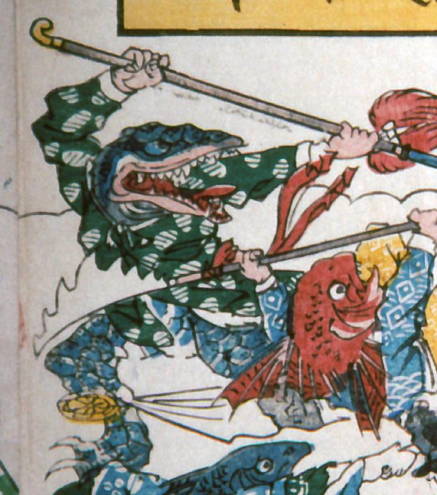

← 图鉴索引

武器を持ち戦うわに。身体は青く、全身に鱗がある。緑で小判柄の上衣を着ている。
出典：親書誌：A5_pushkin_0041：新宮魚勝戦；シングウウオガッセン／日付：2011／資源識別子：A5_pushkin_0041_0012_0000
Copyright (c)2010- International Research Center for Japanese Studies, Kyoto, Japan. All rights reserved.